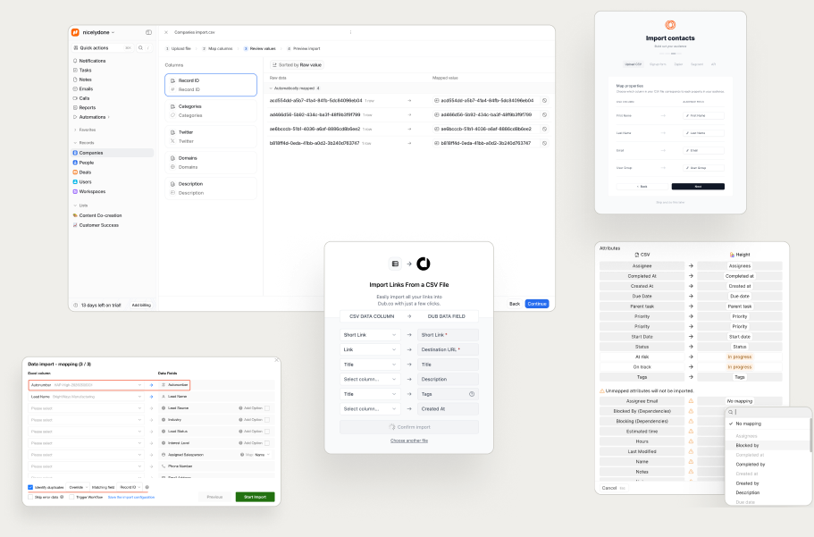

The problem
Invoices were entered one by one — a model that couldn't scale, blocking high-volume brands and burning ~25 Ops hours a month.
The Goals
~80% less Ops workload, +5% onboarding boost for high-volume accounts, and 60% bulk adoption for recurring invoices.
The work
An AI-powered bulk flow: drag-and-drop import, AI product matching, and a review grid with validation flags and bulk editing.
Overview
Finaloop is a real-time accounting platform for e-commerce merchants — automating up to 90% of bookkeeping by connecting directly to sales channels and banks. In this project I designed the platform's AI-powered bulk invoice upload: a self-serve flow for importing, matching, and reviewing large invoice datasets.
Pain points
Originally, invoices were entered manually one by one. This single-entry model failed to scale upmarket, blocking high-tier conversion — across three key areas:
- •User friction: active users spent hours on manual entry, driving 30+ CSV-upload feature requests in a single month.
- •Market expansion: high-volume B2B brands couldn't migrate historical invoice data — EDI-dependent brands couldn't onboard at all.
- •Industry risk: manual entry at scale is error-prone, with benchmarks showing a 39% error rate (Ardent Partners, 2024).
Ops was processing invoices by hand, just to keep accounts active.
The cost
~30 managed accounts, 1,000 invoices and ~25 hours of manual Ops work every month — on 3 employees.
Discovery
I mapped how e-commerce operators manage large data volumes today, how automation earns trust in financial workflows, and how to move high-volume users from internal support to a self-serve flow they actually want to use.
01
Delegation is a product failure
When users hand off to an internal Ops team, the product has given them no other option.
02
From data input to data verification
AI extraction shifts the job to auditing — a scannable grid with inline editing, not a form.
03
Volume changes the user's role
A form works at 5 invoices; at 50 it's the wrong tool. High volume turns data entry into data review — calling for a scannable grid where users filter, correct and confirm, instead of typing field by field.
KPIs
01
~80% less Ops work
Saving ~25 hours a month via self-service invoice entry.
02
+5% onboarding boost
Unblocking registration for high-volume accounts.
03
60% bulk adoption
Target workflow rate for recurring invoices.
Core Assumption
In financial workflows, trust comes from control and real-time validation — not promises of accuracy.
Design constraints:
- •No financial impact until explicit user confirmation — validation issues are flagged for correction before anything posts to the books.
- •The system must absorb AI extraction failures across large uploads without cognitive overload.
The objective: an AI-powered bulk upload and review experience that lets users process large datasets independently — shifting Ops from manual work to high-level oversight.
The Challenge
01
No precedent
No platform had solved this — I adapted patterns from unrelated industries.
02
Zero-error accounting
A frictionless experience that strictly prevents critical financial mistakes.
03
Taming edge cases
Turning unmapped edge cases into structured, scalable system behaviors.
Pattern inspirations
Click to enlarge.

Execution
Three steps, full control
The flow breaks a high-stakes process into three controlled steps — import, match, review — each with clear feedback and a safe exit.
Execution/01
Import without friction
Drag-and-drop with instant parsing feedback. Users can add more invoices or leave mid-flow — parsed files auto-save to a dedicated dashboard tab.
Execution/02
AI does the matching
AI matches extracted products to existing SKUs, flags missing data, and filters line items that need attention.
Execution/03
Review, then commit
A scannable review grid with validation flags, filtering, and bulk editing — line items open in a modal for quantity, price, discounts and shipping. Nothing posts to the books until explicit confirmation.
Full flow
Click to enlarge.
Edge Cases
Click to enlarge.
More Features
Click to enlarge.
Key Learnings
What the process taught me
The feature was pulled from the backlog and never shipped, so there was no live impact to measure — but the design process itself surfaced lasting takeaways:
- •Safety enables speed: the staging model eliminates manual errors — removing the fear of breaking the books is how we built user trust.
- •Questions are a design tool: facing data gaps and asking the right questions aligned product scope and built strong collaboration with the PM.
- •At scale, edge cases are the core experience: duplicates and extraction failures are expected, not exceptions.